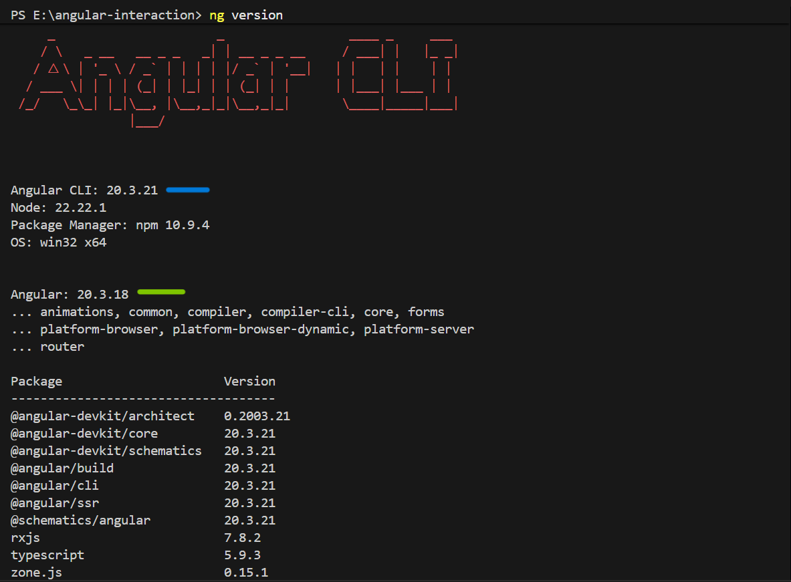
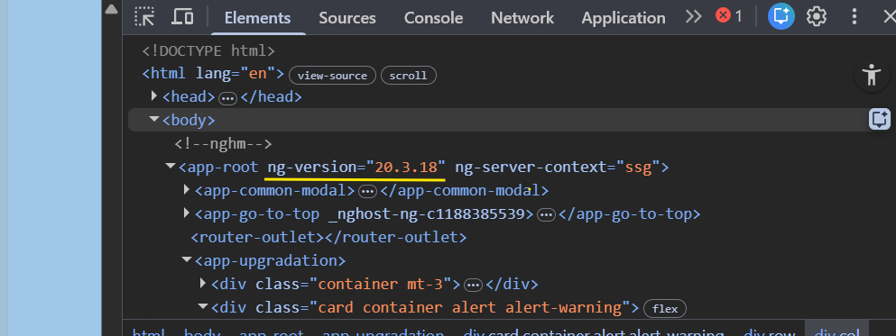

Angular CLI vs Angular Version
🧰 1. Angular CLI (Command Line Interface)
👉 Think of it as a tool you use to work with Angular
What it does:
Create projects → ng new
Generate components → ng generate component
Run app → ng serve
Build app → ng build
👉 It’s basically a developer assistant
🧱 2. Angular Version (Framework Version)
👉 This is the actual Angular framework your app is built with
Example:
Angular 14
Angular 15
Angular 16
Angular 17+
👉 It defines:
Features available
Syntax support
Performance improvements
⚠️ Important: They can be different
You can have:
CLI version → 17
Angular project → 15
👉 That’s totally possible
🔍 Check versions
CLI version: ng version

Angular version:

Previous configurations :
Angular CLI: 17.3.11
Node: 20.12.2
Package Manager: npm 10.5.0
OS: win32 x64
Angular: 17.3.12
New Angular versions require newer Node.
Typical requirements:
| Angular | Node |
| ------- | ------------ |
| 17 | Node 18+ |
| 18–19 | Node 18 / 20 |
| 20+ | Node 20+ |
npm install -g @angular/cli@latest
ng version
Now while checking the ng version,
we can see below node issue :
Node.js version v20.12.2 detected.
The Angular CLI requires a minimum Node.js version of v20.19 or v22.12.
(ITS A TIME TO UPGRADE NODEJS)
Install NVM :
Node Version Manager It is a command-line tool that allows you to install and manage
multiple versions of Node.js on a single machine. This is particularly useful for developers working on
multiple projects that require different versions of Node.js to run correctly.
install nvm https://github.com/coreybutler/nvm-windows/releases Install nvm-setup.exe After installation open new terminal.
Check nvm : nvm version -> Running version 1.2.2.
nvm install 22 nvm use 22 node -v
*-----------------------------*
CHECK NODE IN TERMINAL
PS C:\WINDOWS\system32> node
Welcome to Node.js v22.22.1.
Type ".help" for more information.
> console.log("node working")
node working
undefined
> .exit
PS C:\WINDOWS\system32>
*-----------------------------*
npm install -g @angular/cli@latest
Now : while check ng v on c folder Angular CLI : 21.2.2 Node.js : 22.22.1 Package Manager : npm 10.9.4 Operating System : win32 x64
Inside your project folder, run:
ng update @angular/core@latest @angular/cli@latest
Fetching dependency metadata from registry...
Updating multiple major versions of '@angular/core' at once is not supported. Please migrate each major
version individually.
HERE We need to upgrade version by version , not single upgrade to jump more versions
version upgrade tree 17 → 18 18 → 19 19 → 20 So you may run:
ng update @angular/core@18 @angular/cli@18
Now updated to 18
=================
Angular CLI: 18.2.21
Node: 22.22.1
Package Manager: npm 10.9.4
OS: win32 x64
Angular: 18.2.14
====================
ng update @angular/core@19 @angular/cli@19
if any error : ng update @angular/core@19 @angular/cli@19 --force
=========================
Angular CLI: 19.2.22
Node: 22.22.1
Package Manager: npm 10.9.4
OS: win32 x64
=========================
Next : ng update @angular/core@20 @angular/cli@20 --force
==========================
Angular CLI: 20.3.20
Node: 22.22.1
Package Manager: npm 10.9.4
OS: win32 x64
Angular: 20.3.18
==========================